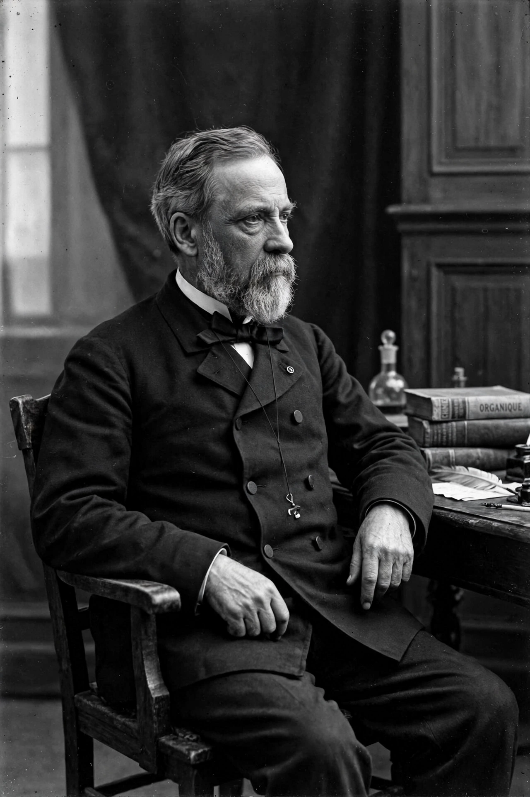

Louis Pasteur
Louis Pasteur (1822–1895) was a French chemist and microbiologist whose work founded medical microbiology and transformed medicine, brewing and food safety. He demonstrated that fermentation is caused by living microorganisms, disproved spontaneous generation in his famous swan-neck flask experiments, and developed the heat treatment of milk and wine that bears his name — pasteurisation.

Pasteur portrait (image regenerated from memory)
Pasteur went on to develop vaccines against anthrax (1881, publicly demonstrated at Pouilly-le-Fort) and rabies (1885, famously used to save the bitten boy Joseph Meister), founding the Pasteur Institute in Paris in 1887. With Robert Koch, he established the germ theory of disease: that specific microbes cause specific infectious diseases, a framework that made modern hygiene, surgery and public health possible.
Key contributions
Pasteur showed that microbes spoil wine and beer and come from the environment, not from the liquids themselves; that silkworm diseases devastating French industry were microbial; and that weakened (attenuated) microbes could immunise — extending Jenner's vaccination from lucky observation to a general laboratory method.
Legacy
The germ theory underlies antiseptic surgery (Lister acknowledged Pasteur directly), water treatment and food microbiology. The Pasteur Institute became a model research institution; its scientists later identified the plague bacillus and HIV. A quotation attributed to him — "chance favours the prepared mind" — is often repeated, though its exact wording is paraphrased.